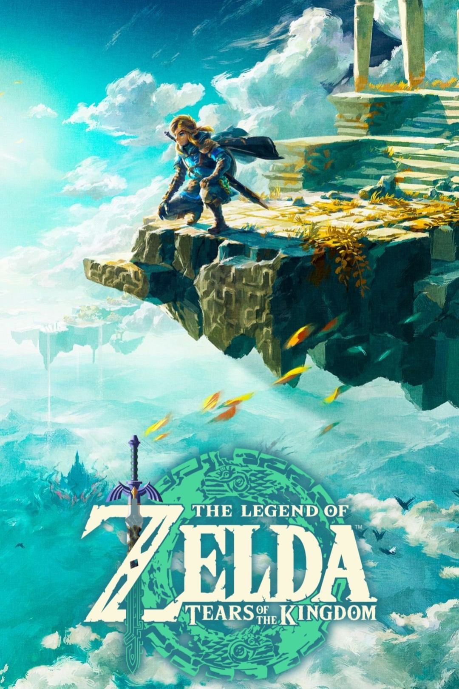
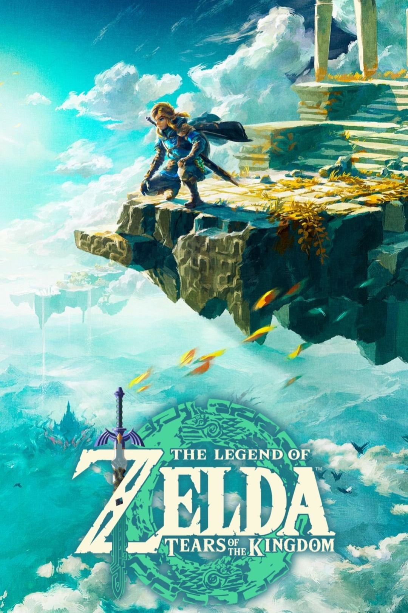

About Me
My name is Christopher. I was born on September 24th in 2008, making me 15 at the time
of writing this. I only have one sibling, that being my half-brother named Dejour. We've lived
in Massachussets for most of our lives, but in 2023, my mom and I moved down to North
Carolina, and my brother moved to New Hampshire to live with his now fiancée (my soon-to-be
sister-in-law!).
For school, I'm currently a rising sophomore at New Canaan High School in Conneticut. I'm able to
attend this school thanks to the ABC (A Better Chance) program, which essentially allows me to
board for a non-boarding school. For the Summer of 2024, I joined a program called All Star Code,
which taught me about all things computer science and the tech industry, as I plan to land a job in
that field in the future. That program is actually the reason this webpage exists! This all part of
the 3rd week project. I hope you enjoy looking through it as much as I did creating it!
 
